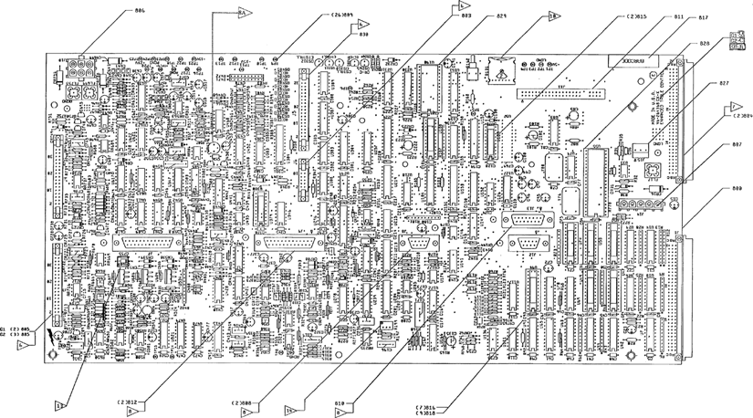

Operating Documentation
Direction 5114045-800, Rev# 10
LightSpeed 4.X Service Information (Advanced)
Operating Documentation |
Refer to Illustration 1, below, for sections 2.3.1 through 2.3.3.
Illustration 1: ETC Board Layout

TP1 +5V: (Digital +5 volts) Power Supply Test Point
TP2 LGND: (Digital LGND) Power Supply Test Point
TP3: (Digital ±12 volts) RS232 Table XMIT
TP4: (Digital ±12 volts) RS232 Table REC
TP5: (Digital +5 volts) Spare
TP6: (Digital 0 - 5 volts) Long Encoder CH C
TP7 AGND: (Analog) AGND Power Supply Test Point
TP8: (Analog ±15 volts) Cradle Tach (relatively noisy signal) Gain = 75 mm/sec = 6.3 volts at TP
TP9: (Digital 0 - 5 volts) Long Encoder CH B
TP10: (Digital 0 - 5 volts) Long Encoder CH A
TP11 -15v: (Analog -15 volts) Power Supply Test PointTP12: (Analog 0 - 10 volts) Elev/Tilt Pulse Width Modulation (PWM) Control, (controls AR689 pulse width) Gain =5 uSec pulse Width/volt command
TP13: (Analog +10 volts) +10 Reference
TP14: (Analog 0 - 15 volts) Cradle Current Integrator (averages out pulses from AR653) Wider pulses = more amp current = higher signal
TP15 -15V: (Analog 0 - 15 volts) Elev/Tilt Current Integrator (averages out pulses from AR563) Wider pulses = more amp current = higher signal.
TP16: (Analog 0 - 10 volts) Cradle Pulse Width Modulation (PWM) Control (controls AR669 pulse width) Gain = 5 uSec pulse Width/volt command Analog Signal
TP17: (Digital 0 - 15 volts) Cradle Pulse Width Modulation (PWM) sets output (v) of power amp. Volts out = Pulse width (uSec) * 24 / 56
TP18 AGND: (Analog Ground) Power Supply Test Point
TP19: (Analog ±15 volts) Elev/Tilt Motor Voltage Feedback (Filtered map pulse width modulation signal, fc = 39 cps, gain TP19/amp voltage =.05v/v)
TP20: (Digital 0 - 15 volts) Trigger SYNCH Signal PWM trigger for power amps (17.72 KHz)
TP21 +15V: (Analog +15 volts) Power Supply Test Point
TP22: (Digital 0 - 5 volts) Elev/Tilt Command Direction (+5V = Up/Forward)
TP23: (Digital 0 - 15 volts) Elev/Tilt PWM (sets output (v) of power amp. volts out = pw (uSec) * 160 /56)
TP24 PGND: (Analog Physical Ground) Power Supply Test Point
TP25 +24V: (Analog +24 volts) Power Supply Test Point
TP26: (Analog ±15 volts) Cradle motor voltage Feedback (filtered amp pwm signal), FC = 64 CPS Gain (TP26/amp voltage) = 0.41v/v
DS263 CR-A: Cradle Encoder A-pulse active
DS264 CR-B: Cradle Encoder B-pulse active
DS265 CR-C: Cradle Encoder C-pulse active
DS266 EL-C: Elevation Encoder C-pulse active
DS310 CSTALL: Cradle stalled when on
DS311 ETFAULT: Elevation/Tilt Amp fault elevation or tilt drive shorted when on
DS312 ETSTALL: Elevation/Tilt Amp stall or tilt drive stalled when on
S162: Reset
S131 Diagnostic: Set to F. Note this switch is checked during power up but is not used.